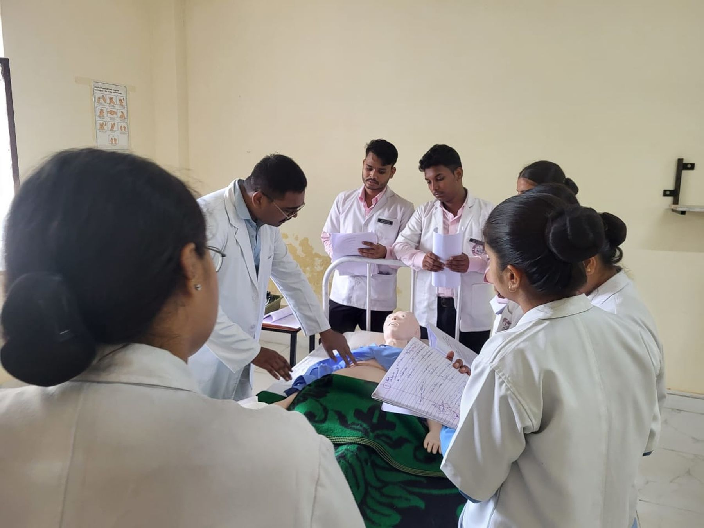
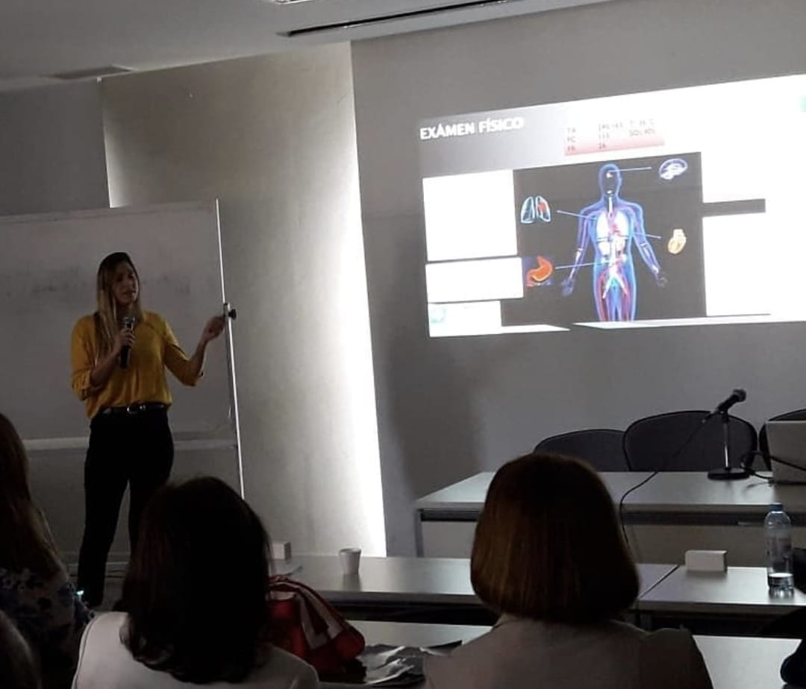
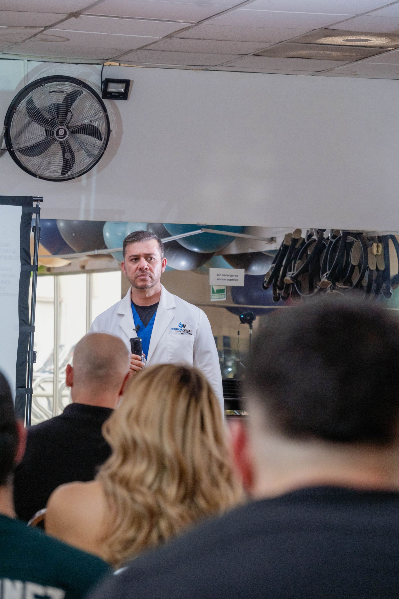

CardiologíaAnatomía y función cardíaca
● Educación médica online
Formación médica
que late con vos.
Una plataforma educativa para acceder a cursos, organizar tu aprendizaje y seguir avanzando desde cualquier lugar.
Contenido organizadoAcceso onlineProgreso visible
Buen díaMi aprendizaje
Mis cursosContenido de muestra
ActualizaciónPráctica clínica basada en casos
Aprendé a tu ritmo
Ingresá cuando quieras y retomá donde dejaste.
Todo en un solo lugar
Clases, recursos y actividades bien organizados.
Seguí tu avance
Visualizá tu recorrido dentro de cada curso.
Catálogo académico
Cursos para seguir
creciendo.
Una propuesta pensada para presentar la formación disponible de manera clara, profesional y fácil de recorrer.
Cardiología
Clínica

PrácticaLos nombres y contenidos de los cursos de esta demostración son ilustrativos y pueden reemplazarse por la oferta académica real de CardioAcademia.
Campus virtual
Una experiencia clara.
De principio a fin.
La plataforma puede organizarse en Moodle para que cada alumno encuentre sus cursos, módulos, materiales y actividades sin perderse.
- 01Acceso personal
Cada alumno ingresa con su propio usuario.
- 02Contenido por módulos
Videos, documentos y recursos en orden.
- 03Actividades y avance
Evaluaciones y seguimiento dentro del campus.
▶
MÓDULO 03 · CLASE DEMOSTRATIVALectura sistemática del trazado
Material audiovisual, documentos complementarios y actividades reunidos en un mismo espacio.
Material de la clase
Tu recorrido
Simple para aprender.
Simple para avanzar.
Creá tu cuenta
Ingresá al campus con tus datos personales.
Elegí tu curso
Encontrá la propuesta que acompaña tu formación.
Aprendé a tu ritmo
Avanzá por las clases desde donde estés.
Seguí tu progreso
Retomá el contenido y visualizá tu recorrido.

Imagen aportada por CardioAcademiaExperiencia docente
Conocimiento que nace de la práctica real.
Una identidad académica cercana, rigurosa y enfocada en acompañar a profesionales de la salud durante todo el proceso de aprendizaje.
“La tecnología al servicio de una formación médica clara, accesible y bien organizada.”Conocer la propuesta ↗
Aprendizaje activo
Teoría, práctica
y comunidad.
Un espacio digital pensado para enriquecer cada instancia de formación.

Preguntas frecuentes
Antes de
empezar.
Información útil sobre la experiencia de formación y la plataforma.
Hacer otra consulta ↗Cada alumno puede ingresar al campus con su propio usuario y acceder al contenido habilitado desde computadora, tablet o celular.
La plataforma permite organizar clases, videos, documentos, recursos descargables, actividades y evaluaciones dentro de cada curso.
Sí, la implementación final puede contemplar los recursos que CardioAcademia ya posee. Antes se revisan la configuración y compatibilidad técnica del hosting y el dominio.
Podés escribir directamente por WhatsApp para recibir información sobre cursos, modalidades y próximas propuestas.